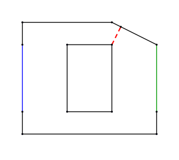

|
Because of crowd management difficulties experienced during recent unfortunate events regarding the WSA leadership, the WSA decided to investigate the flow of personnel in public buildings. A stampede of people constrained in passages partially blocked by columns, plants, janitors, and other debris caused unwelcome media attention and made it difficult to control "demonstrators" and other undesirables. Based on advice from their private hands-on security experts and other consultants, the WSA decided that in the future it wishes to arrange conferences in buildings that can pass people through at a given rate during escape scenarios. |
source: http://vector.me/browse/182519/emergency_exit_sign_clip_art |
Your task is to find the maximum possible flow rate of people for each given layout. (Keep in mind that the carrying capacity of a corridor is proportional to its cross section.)
First line contains 3 numbers, first o, the number of obstacles, then b end e, the beginning and end sides of the outer polygon. The side of the outer polygon between the bth and (b+1)th vertices is the beginning, and the side of the outer polygon between the eth and (e+1)th vertices is the end. 0 < b, e < n of outer polygon.
Next is the outer polygon, the first line of which is n, the number of sides, then n lines with the x and y coordinates of the n vertices, starting with the 1st vertex. The coordinates are all floating point numbers.
Next come the o obstacles in the same format.
We accept an output if it is within 0.0001% of the official solution.
Example input1 2 6 8 0 0 0 1 0 4 0 5 4 5 6 4 6 1 6 0 4 2 1 2 4 4 4 4 1 | Example output1.89442719 |
| In the example, a big obstacle in the middle splits the layout to two corridors. The bottom corridor has a width of 1, but the top corridor is only 0.89442719 wide at its narrowest point, marked by the red dashed line, so the total possible flow is equivalent to a corridor that is 1.89442719 wide. |  |